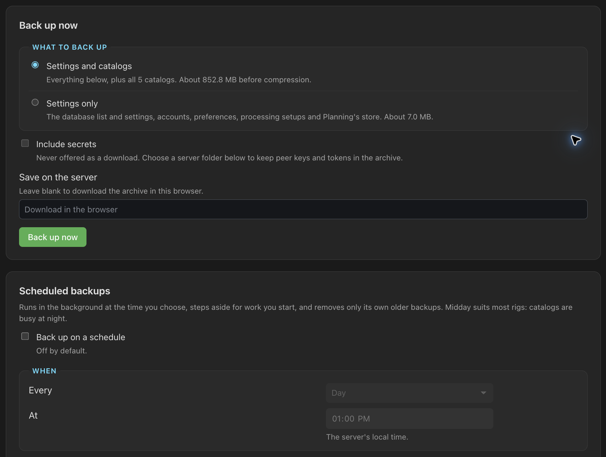
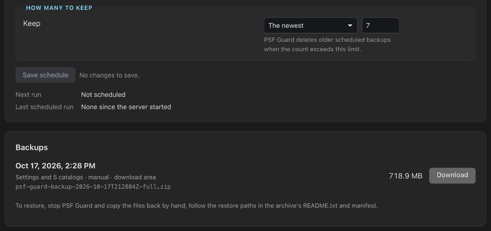

Backups
Back up PSF Guard's settings and catalogs in one zip archive. Start a backup in Settings, set a schedule, or run it from the command line. PSF Guard copies catalogs safely while N.I.N.A. keeps writing to them.
What a backup contains
One archive, named psf-guard-backup-<UTC time>-<scope>.zip,
such as psf-guard-backup-2026-10-16T120000Z-full.zip. Archives
made by the schedule end in -auto. Inside:
manifest.json: the PSF Guard version, when and how the backup was made, every file with its SHA-256, size and source path, each catalog and whether it was included, and any problems.README.txt: how to restore.meta/: PSF Guard's own state.catalogs/<slug>/: each registered catalog, in a full backup.
| Scope | Contents |
|---|---|
Settings only (meta) | The registry and its settings, accounts, view preferences, processing setups, Planning's store, the desktop app's port, the server's TOML file when given, and the remote sync audit log. Usually under a megabyte. |
Settings and catalogs (full) | The same, plus every catalog with the tables PSF Guard adds to it: grades and reject reasons, calibration frames and their grades, flat measurements, the reject archive's records. Hundreds of megabytes for a large catalog. |
PSF Guard's own files sit beside the registry:
~/Library/Application Support/psf-guard/ on macOS,
~/.config/psf-guard/ on Linux, %APPDATA%\psf-guard\ on
Windows, /data/config/psf-guard/ in Docker, and
/var/lib/psf-guard/ for the Fedora RPM's service.
How catalogs are copied
PSF Guard uses SQLite's online backup to copy catalogs. It opens the source read-only and copies a few pages at a time, with short pauses so N.I.N.A. and the server can keep writing. A catalog that keeps changing through 40 restarts of the copy, or that cannot be opened, is left out of that archive and named in its manifest; the rest of the backup goes on.
What a backup leaves out
Backups exclude image previews and star lists, stacks and their processing, calibration masters, plate solves, satellite elements, sky maps, and Seiza catalogs. PSF Guard can rebuild or fetch these. Backups also exclude the original FITS and XISF frames. Back up your image folders separately. Settings › Storage shows how large the generated folders are.
Secrets
Outgoing peer keys, collaboration service tokens and any
token in the server's TOML file are stored as plain text, so a backup
leaves them out unless you tick Include secrets
(--include-secrets). Peer keys are blanked, the collaboration
credentials file is left out, and TOML tokens become REDACTED.
Account password hashes and API token hashes are always kept, so a restore
keeps every account.
An archive with secrets is never offered as a download; it stays in the server folder you chose. On a local macOS or Linux disk archives are readable only by their owner. FAT, exFAT, SMB shares and Windows folders do not preserve those permissions. Store the archive in a folder only you can read.
Back up now
Open Settings › Backups. Choose the scope and whether to include secrets, then click Back up now. In a browser, leave the folder empty to download the archive; the server keeps it for a day. In the desktop app, pick a folder with Browse…. The run shows in Settings and in the header's job line, with Stop.

Backing up from Settings needs an editor account, and on a server,
--allow-database-management. The desktop app always allows it.
Scheduled backups
Turn on Back up on a schedule and set:
- Every day or week, the weekday, and the time, in the server's local time. Midday is the default: catalogs are quiet by day.
- Folder: required. Use another disk. Saving creates the folder; a run never does, so an unmounted disk fails the run instead of filling the system disk.
- What to back up: settings and catalogs by default.
- Include secrets: off by default.
- How many to keep: the newest 7 by default, or all archives from a set number of days. PSF Guard always keeps the newest archive.

Scheduled backups wait for jobs you started. While paused, a backup appears as waiting in the job list. A server that was off at the scheduled time runs once when it comes back. A failed run tries again an hour later.
After a complete scheduled backup, PSF Guard removes older scheduled archives. It never removes archives made by hand or by the CLI, another install's archives in a shared folder, or the last archive that holds a catalog a newer run left out.
/var/lib/psf-guard/backups. To back up to
another disk from the schedule, allow the folder:
sudo systemctl edit psf-guard
# add:
[Service]
ReadWritePaths=/mnt/backups/psf-guard-v /mnt/backups:/backups, rather than
keeping backups on the /data volume they protect.
Back up from the command line
psf-guard backup makes the same archive as Settings. It reads the
registry and catalogs directly, may run while the server or desktop app runs,
and needs no account: only read access to the registry and catalogs and
write access to the folder.
psf-guard backup /mnt/backups/psf-guard # settings and catalogs
psf-guard backup /mnt/backups/psf-guard --scope meta # settings only
psf-guard backup /mnt/backups/psf-guard --dry-run # list what it would copy
psf-guard backup /mnt/backups/psf-guard --include-secrets| Option | What it does |
|---|---|
<folder> | Where the archive goes. Created if its parent exists; a missing parent, such as an unmounted disk, is an error. |
--scope full|meta | Settings and catalogs (default), or settings only |
--include-secrets | Keep peer keys, collaboration tokens and TOML tokens in the clear |
--dry-run | Print every file, its size and source, what is left out and why, and write nothing |
--registry <file> | The registry to back up. Default: the desktop app's, beside the folders listed above |
--config <file>, -c | The server's TOML file, to back it up too |
--director-meta <file> | Planning's store, when the server keeps it away from the registry |
On Windows the command is psf-guard-cli, which the installer puts on
your PATH.
Check that a backup is complete
The command exits non-zero when it writes no archive: no registry, a
missing destination, or a failed write. A catalog it could not reach, or that
kept changing, is left out with a left out: line and the command
still exits 0, so a script should read the manifest. A complete archive has
every catalog "included": true and no problems:
unzip -p "$archive" manifest.json \
| jq -e '([.catalogs[] | select(.included | not)] | length) == 0
and ((.problems // []) | length) == 0'unzip -t "$archive" tests the zip itself.
Remove old archives
Scheduled cleanup never removes CLI archives. Remove old ones in your backup script:
# Linux and macOS: drop full archives older than 30 days
find /mnt/backups/psf-guard -name 'psf-guard-backup-*-full.zip' -mtime +30 -delete
# Windows PowerShell
Get-ChildItem D:\Backups\PSF-Guard -Filter 'psf-guard-backup-*-full.zip' |
Where-Object LastWriteTime -lt (Get-Date).AddDays(-30) | Remove-ItemAutomate it
Run the CLI from your system's scheduler when you want backups outside the app: to a NAS, before a nightly sync, or as part of a wider backup job. Pick a quiet hour; midday suits most rigs.
A script for Linux or macOS
#!/bin/sh
set -eu
dest=/mnt/backups/psf-guard
psf-guard backup "$dest" # add --registry and --config for a server
latest=$(ls -t "$dest"/psf-guard-backup-*-full.zip | head -n 1)
unzip -tq "$latest"
unzip -p "$latest" manifest.json \
| jq -e '([.catalogs[] | select(.included | not)] | length) == 0
and ((.problems // []) | length) == 0' >/dev/null \
|| { echo "PSF Guard backup incomplete: $latest" >&2; exit 1; }
find "$dest" -name 'psf-guard-backup-*-full.zip' -mtime +30 -deleteRun it daily from cron (crontab -e):
0 12 * * * /usr/local/bin/psf-guard-backup.sh >> "$HOME/psf-guard-backup.log" 2>&1Fedora RPM: a systemd timer
Run as the service's user, with its registry and config:
# /etc/systemd/system/psf-guard-backup.service
[Unit]
Description=Back up PSF Guard and its catalogs
[Service]
Type=oneshot
User=psfguard
ExecStart=/usr/bin/psf-guard backup /mnt/backups/psf-guard \
--registry /var/lib/psf-guard/registry.json
# /etc/systemd/system/psf-guard-backup.timer
[Unit]
Description=Daily PSF Guard backup
[Timer]
OnCalendar=*-*-* 12:00
Persistent=true
[Install]
WantedBy=timers.targetsudo systemctl daemon-reload
sudo systemctl enable --now psf-guard-backup.timer
systemctl list-timers psf-guard-backup.timerAdd --config /etc/psf-guard/psf-guard.toml if the service uses one.
The psfguard user needs write access to the folder.
Docker
Mount a backup folder into the container and run the CLI inside it. The
image already points the CLI at the registry under /data:
docker run -d -p 3000:3000 \
-v psf-guard-data:/data \
-v /mnt/backups/psf-guard:/backups \
... ghcr.io/theatrus/psf-guard:latest
# from the host's cron or timer
docker exec <container> psf-guard backup /backupsThe container runs as user 1000, which needs write access to the backup folder.
Windows Task Scheduler
On the machine that runs the desktop app, the CLI finds the app's registry on its own:
schtasks /Create /SC DAILY /ST 12:00 /TN "PSF Guard backup" ^
/TR "psf-guard-cli backup D:\Backups\PSF-Guard"Give the full path to psf-guard-cli.exe if the task cannot find it.
Prune with the PowerShell line above in a second task or
a script.
Restore by hand
PSF Guard never restores an archive itself: a wrong restore could replace a catalog N.I.N.A. is using.
- Quit the desktop app or stop the server. If you restore N.I.N.A.'s scheduler database, close N.I.N.A. too.
- Unzip the archive somewhere new. Check a file against
manifest.jsonwithshasum -a 256 <file>. - Keep a copy of every file you are about to replace.
- Copy each file under
meta/back to itssourcepath in the manifest. For a full backup, copy each file undercatalogs/<slug>/to its catalog'sdb_path, and delete any-waland-shmfiles beside it. - If the backup left secrets out, enter peer keys, collaboration sign-ins and the server's remote tokens again.
- Start PSF Guard. PSF Guard rebuilds previews, stacks and masters as you use them.
To move to a new machine, restore the same way, then fix catalog and image folder paths in Settings › Databases if they differ.